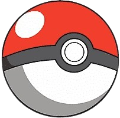

<ion-header [translucent]="true">
  <ion-toolbar>
    <ion-title>
      
      <b> PokeHiago</b>
    </ion-title>
    <ion-buttons slot="end">
      <ion-button fill="clear" shape="round">
        <ion-icon slot="icon-only" name="log-out-outline"></ion-icon>
      </ion-button>
    </ion-buttons>
  </ion-toolbar>
</ion-header>

<ion-content [fullscreen]="true">
  <div id="container">
    <ion-grid>
      <div style="display: flex; justify-content: center;">
        <ion-searchbar (ionInput)="applyFilter($event)" (ionClear)="clearFilter()"/>
      </div>
      <ion-row *ngFor="let cardGroup of getCardGroups(); trackBy: trackByPokemonId">
        <ion-col *ngFor="let card of cardGroup; trackBy: trackByPokemonId" size="12" size-sm="3">
          <ion-card id="card-poke" [class.favorite]="card.favorite">
            
            <ion-button (click)="updateFavorite(card.id, !card.favorite)" color="warning" 
            fill="clear" class="favorite-button" shape="round">
              <ion-icon slot="icon-only" [name]="card.favorite ? 'star' : 'star-outline'"></ion-icon>
            </ion-button>
            <ion-button shape="round" (click)="openModal(card.id, card.favorite)" class="detail-button" fill="clear">
              <ion-icon slot="icon-only" name="information-outline"></ion-icon>
            </ion-button>
            <ion-card-header>
              <ion-card-title>#{{card.id}} {{card.name }}</ion-card-title>
            </ion-card-header>
          </ion-card>
        </ion-col>
      </ion-row>
    </ion-grid>
  </div>
  <ion-infinite-scroll  (ionInfinite)="onIonInfinite($event)">
    <ion-infinite-scroll-content loadingText="Please wait..." loadingSpinner="bubbles"></ion-infinite-scroll-content>
  </ion-infinite-scroll>
</ion-content>

